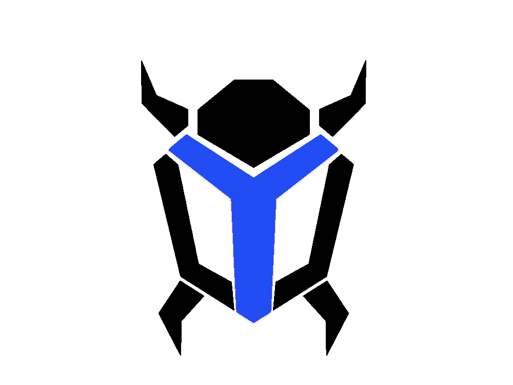
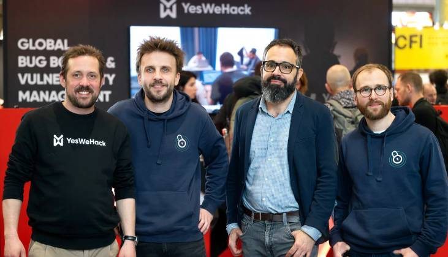
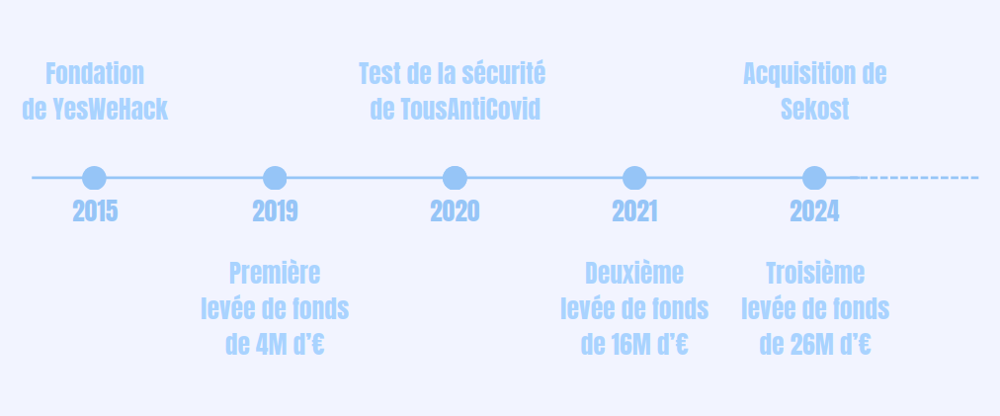
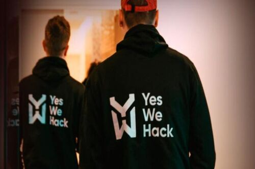
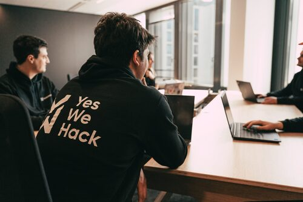
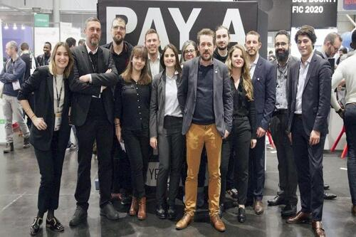

HISTOIRE
ECONOMIE
FONCTIONNEMENT
ETHIQUE
HISTOIRE
De start-up française à géant du bug bounty

Frise Chronologique

Débuts de l'entreprise
Fondée en 2015 par Guillaume Vassault-Houlière et Manuel Dorne
Plateforme née du milieu des hackers éthiques
Connecte des organisations à des dizaines de miliers de chercheurs en cyber-sécurité
Définir les notions de bug bounty, hackeur éthique, white hat

Expansion de la start-up
Un total de 40 000 inscrits
Différentes levées de fonds (2019, 2021, 2024)
Clients différents: DoctoLib, Décathlon, Orange, Tencent ...
2020: tester la sécurité de l'application TousAntiCovid
Certifiés SecNumCloud, ISO 27001, CSA STAR, SOC I /II Type 2 et PCI DSS

YesWeHack aujourd'hui et demain
Leader européen du bug bounty
Developpement constant de sa communauté dans le monde
Acquisition de Sekost en 2024
A obtenu le statut d'autorité de numérotation CVE (Common Vulnerabilities and Exposures)
